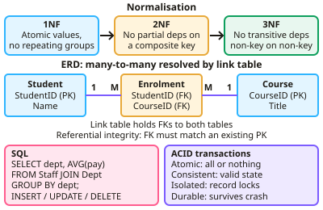

A-level Computer Science Year 13 · Topic 7
Databases, big data and functional programming
Databases, big data and functional programming covers advanced data handling and a different style of programming.
We will design normalised relational databases, model entities, and keep data safe with transactions, locking and keys.
Then we look at client server databases, big data, and functional programming with higher order functions, composition and partial application.
- 8 subtopics
- 217 questions
- Free: 7.1 notes and 10 questions
In this topic
- 7.1Databases, normalisation and SQLFree below · 28 questions
- 7.2Big data and functional programmingOpen in Full Marks · 27 questions
- 7.3Entity-relationship modelling and relational database conceptsOpen in Full Marks · 35 questions
- 7.4Transaction processing, ACID, record locking and redundancyOpen in Full Marks · 36 questions
- 7.5Indexing, primary, secondary and foreign keys, and referential integrityOpen in Full Marks · 23 questions
- 7.6Client-server databasesOpen in Full Marks · 30 questions
- 7.7Higher-order functions: map, filter and fold, and list processingOpen in Full Marks · 14 questions
- 7.8Function composition, partial application and first-class functionsOpen in Full Marks · 24 questions
7.1 · Free notes
Databases, normalisation and SQL

Key points
- Normalisation organises data to reduce redundancy: 1NF requires atomic values with no repeating groups; 2NF removes partial dependencies on a composite key; 3NF removes transitive dependencies.
- Entity relationship diagrams model relationships (one-to-one, one-to-many, many-to-many), with many-to-many usually resolved using a link table.
- SQL supports SELECT with JOIN, aggregate functions (COUNT, SUM, AVG), GROUP BY, and data modification with INSERT, UPDATE and DELETE.
- Transactions should satisfy ACID properties (atomicity, consistency, isolation, durability); record locking prevents conflicting simultaneous updates.
- Referential integrity ensures a foreign key always refers to an existing record.
In more detail
- Worked normalisation: (StudentID, StudentName, CourseID, CourseName, Grade) becomes Student(StudentID, StudentName), Course(CourseID, CourseName) and Enrolment(StudentID, CourseID, Grade).
- Worked nested query: SELECT Name FROM Student WHERE StudentID IN (SELECT StudentID FROM Enrolment WHERE CourseID = 'CS');
- Worked grouping: SELECT CourseID, AVG(Grade) FROM Enrolment GROUP BY CourseID; gives the average grade for each course.
- Worked table definition: CREATE TABLE Enrolment (StudentID INT, CourseID CHAR(4), Grade INT, PRIMARY KEY (StudentID, CourseID), FOREIGN KEY (StudentID) REFERENCES Student(StudentID));
- Worked anomaly: in an unnormalised table, deleting the last student on a course also loses the course's name — a deletion anomaly.
Practice
Databases, normalisation and SQL: 10 questions
Pick an answer to check it, or open the answer for the explanation.
1. What does first normal form (1NF) require?
- No transitive dependencies
- Atomic values with no repeating groups
- No partial dependencies
- Two primary keys
Show answer
B: Atomic values with no repeating groups. Each field holds a single value.
2. What does 3NF remove?
- Repeating groups
- Partial dependencies
- Transitive dependencies
- All relationships
Show answer
C: Transitive dependencies. Non-key fields must not depend on other non-key fields.
3. How is a many-to-many relationship usually implemented?
- With a single table
- Using a link (junction) table
- By removing keys
- It cannot be implemented
Show answer
B: Using a link (junction) table. The link table holds foreign keys to both tables.
4. What does the 'A' in ACID stand for?
- Access
- Atomicity
- Availability
- Accuracy
Show answer
B: Atomicity. A transaction completes fully or not at all.
5. What does referential integrity ensure?
- All fields are indexed
- A foreign key always refers to an existing record
- Tables are normalised
- Queries run faster
Show answer
B: A foreign key always refers to an existing record. It prevents orphaned records.
6. What does 2NF remove?
- Repeating groups
- Partial dependencies on part of a composite key
- Transitive dependencies
- All keys
Show answer
B: Partial dependencies on part of a composite key. 1NF handles repeating groups; 3NF handles transitive dependencies.
7. What does a JOIN do in SQL?
- Deletes tables
- Combines rows from two or more tables using related columns
- Sorts results
- Creates an index
Show answer
B: Combines rows from two or more tables using related columns. It relies on primary and foreign keys.
8. What is record locking used for?
- Encrypting records
- Preventing conflicting simultaneous updates to the same record
- Deleting duplicates
- Sorting records
Show answer
B: Preventing conflicting simultaneous updates to the same record. It supports the isolation property of transactions.
9. Table OrderLine(OrderID, ProductID, ProductName, Qty) has key (OrderID, ProductID). ProductName depends only on ProductID. Which form is broken?
- Boyce-Codd only, 1NF is fine
- 3NF
- 2NF
- 1NF
Show answer
C: 2NF. ProductName depends on part of a composite key, which is a partial dependency. This breaks 2NF. 3NF concerns dependencies between non-key attributes.
10. Student(StudentID, Name, TutorID, TutorName): TutorName depends on TutorID, not StudentID. What does this violate?
- 1NF
- 2NF as the key is composite
- 3NF as it is a transitive dependency
- Referential integrity
Show answer
C: 3NF as it is a transitive dependency. StudentID determines TutorID, which determines TutorName: a transitive dependency, so 3NF is broken. 2NF is not relevant as the key is a single field.
Keep going in Full Marks
Full Marks has 28 questions on Databases, normalisation and SQL (18 more than here), set out in practice levels. You also get notes and 3D models for all 8 subtopics of Databases, big data and functional programming, plus games, timed exams and past papers.
On your exam board
- AQATopic 8: Fundamentals of databases, Topic 9: Big Data and functional programming
- OCRTopic 1.3.2: Databases
Not in the Cambridge specification.